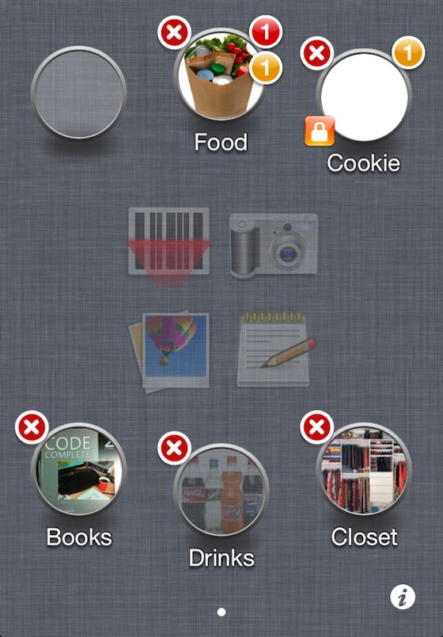
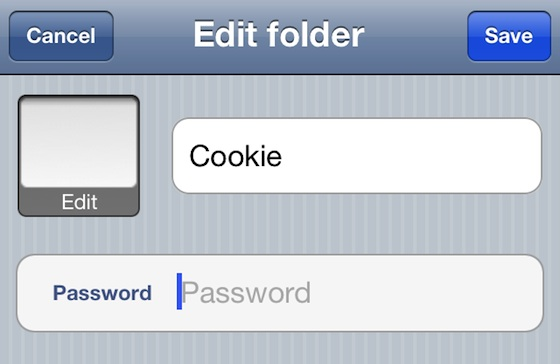

- Long press on a folder until it begins to move up & down.

- Tap on the folder you want to edit and the edit view will show up.
- If the folder is locked, an alert view will pop up to ask for password.

- After editing, press "Save" button to save.
- Tap at anywhere else besides folders to stop shaking.